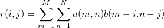

2D相関は、行列に保存されている2つの2D信号間の類似性を検出するのに使われる方法です。2つの行列、aおよびbの2D相関は次式で定義されます。

2D相関の計算には2つの方法 – FFT および Shift-Accumulationがあります。Shift accumulationが選択されると、結果は相関の定義式を使って計算されます。FFTが選択されると、2D相関の計算は実際には次の手順で実行されます。
一般的には、FFTの方法は大きなデータに対して高速に計算しますが、FFTの性質から境界に近いいくつかのデータポイントに対して正確さが失われます。